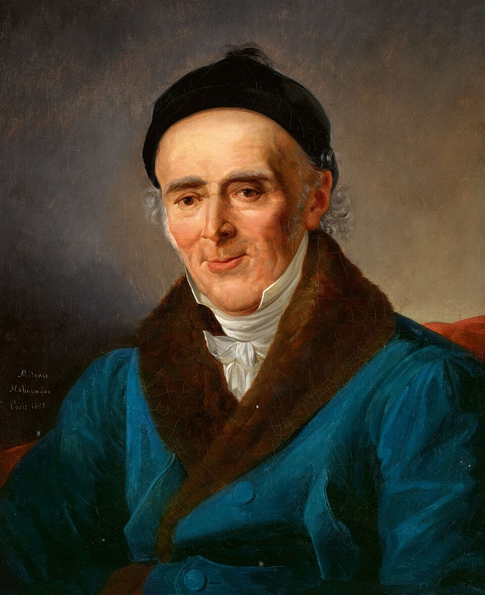

Organon of Medicine
The Organon of Medicine in the 1922 Boericke translation — readable offline, on any device you already own.
What's inside
The text, whole
Every section, in order, with the section numbers in the margin so a citation from a book still finds its place.
Search that works offline
Type a phrase and jump to the section that holds it. No server, no round trip, no connection to lose.
Your marks, on your device
Bookmark a section, keep a note, and export both. Nothing is uploaded, and nothing is synced anywhere.
Where the text comes from
Hahnemann died in 1843 and both translations were published long before any of this existed, so the text is public domain. Each edition in the reader was built from scans of a printed translation, merged into one text — and where the scans disagreed, that is a matter for the source, not for the app.
What it is not
It is a reader, not an interpretation. It presents the text and keeps your marks. It does not summarise, reorder, recommend or advise.
Nothing here is medical advice, and nothing in it should be used to diagnose or treat anyone. For anything that matters, see a qualified practitioner.
Support the work


Free to use, and it stays free
One person's work: no company, no ads, no tracking, no paid tier. If it saved you an afternoon, a contribution keeps the next one coming — any amount, or none.